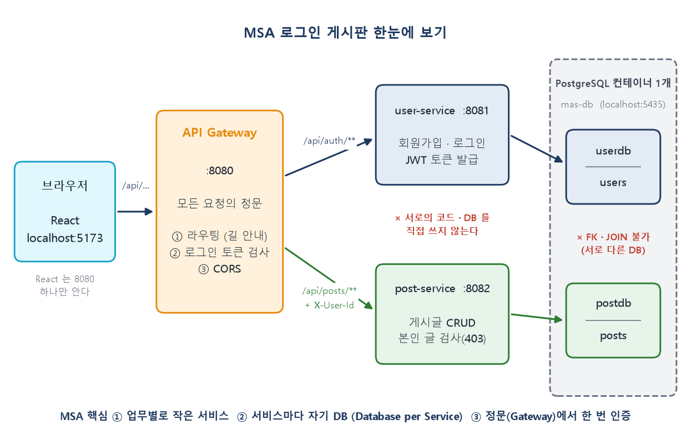

MSA 한눈에 보기 (기초)
React 는 게이트웨이(8080) 하나만 알고, 서비스마다 자기 데이터베이스를 씁니다.

모놀리식 → MSA, 무엇이 바뀌나
React 코드와 API(JSON)는 그대로이고, 서버 안쪽만 나뉩니다.
| 모놀리식 (원본) | MSA (이 저장소) | |
|---|---|---|
| 서버 | Spring Boot 1개 (8080) | 게이트웨이(8080) + user-service(8081) + post-service(8082) |
| DB | authboard 1개 (users, posts, FK) |
userdb(users) + postdb(posts), 컨테이너 1개 (5435) |
| 작성자 | @ManyToOne User author (FK, JOIN) |
user_id + writer(닉네임 복사), FK 없음 |
| 로그인 검사 | Spring Security + JWT 필터 | 게이트웨이 AuthFilter 한 곳 → X-User-Id, X-User-Nickname 헤더 |
| 토큰 | 발급 · 검사 모두 서버 하나 | 발급은 user-service, 검사는 게이트웨이 (같은 jwt.secret) |
| 401 / 403 | Security / PostService | 게이트웨이 / post-service |
| 서비스 하나가 꺼지면 | 전체 멈춤 | 그 기능만 멈춤 (게이트웨이가 503 으로 알림) |
심화: Kafka 이벤트로 데이터 맞추기
닉네임을 바꾸면 user-service 가 소식을 남기고, post-service 가 받아 글 작성자를 고칩니다.

교안 목차
기초를 마친 뒤 심화로 이어집니다. 장마다 개념 → 코드 읽기 → 실행해서 확인 → 확인 문제 순서이고, 답은 각 교안의 부록 B 에 있습니다. (각 권장 8시간)


실습 코드
기초는 저장소 맨 위의 backend, 심화는 advanced/backend 를 IntelliJ 로 엽니다. 한 번에 받으려면 전체 ZIP 이 편합니다.
docker-compose.yml기초 - PostgreSQL 18 (localhost:5435, 컨테이너 mas-db)db/init.sqluserdb, postdb 만들기 (처음 켤 때 한 번 실행)backend/IntelliJ 로 이 폴더를 연다 (Gradle 멀티 프로젝트)backend/api-gateway/Spring Cloud Gateway (8080) - AuthFilter, JwtChecker, GatewayErrorHandlerbackend/user-service/회원 (8081) - User, AuthController, AuthService, JwtProviderbackend/post-service/게시글 (8082) - Post, PostController, PostServicefrontend/React + React Router + AuthContext (5173)advanced/심화 - 기초 코드에 Kafka 이벤트를 더한 완성본 (IntelliJ 로 advanced/backend 를 연다)
PDF 교안
웹 교안과 같은 내용입니다. 인쇄하거나 내려받아 볼 때 쓰세요.